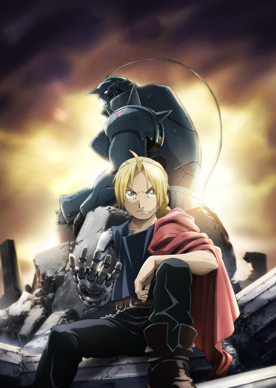

🔥 Ação
Fullmetal Alchemist: Brotherhood
Dois irmãos alquimistas, Edward e Alphonse Elric, quebram uma lei proibida e pagam um preço alto. Em busca de recuperar seus corpos, eles viajam pelo país enfrentando segredos militares, homúnculos e conspirações sombrias. Uma jornada intensa sobre sacrifício, humanidade e redenção.
One Piece

Luffy, um jovem pirata com o sonho de se tornar o Rei dos Piratas, parte para o mar em busca do lendário tesouro conhecido como One Piece. Com sua tripulação peculiar, os Chapéus de Palha, ele enfrenta inimigos poderosos, explora ilhas únicas e vive aventuras épicas em um vasto mundo cheio de liberdade e amizade.
Vinland Saga

Na era dos vikings, Thorfinn, um jovem guerreiro, é consumido pela vingança após perder alguém importante. Em meio a batalhas brutais, disputas de poder e caminhos moralmente complexos, ele descobre que o verdadeiro significado da força pode ser muito diferente do que imaginava. Uma história profunda sobre guerra, honra e crescimento.
Demon Slayer (Kimetsu no Yaiba)

Após ter sua família destruída por demônios, Tanjiro Kamado se junta ao Corpo de Caçadores para buscar uma cura para sua irmã Nezuko, transformada em demônio. Em batalhas visualmente impressionantes, ele enfrenta inimigos poderosos, desafios emocionais e segredos do mundo demoníaco.
Dragon Ball

Goku, um garoto com força extraordinária e espírito puro, viaja pelo mundo em busca das lendárias Esferas do Dragão. Ao lado de novos amigos, ele enfrenta inimigos cada vez mais poderosos, mistura aventura com artes marciais e dá início a uma das franquias de ação mais influentes da história.